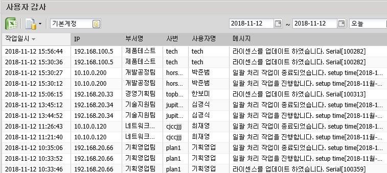
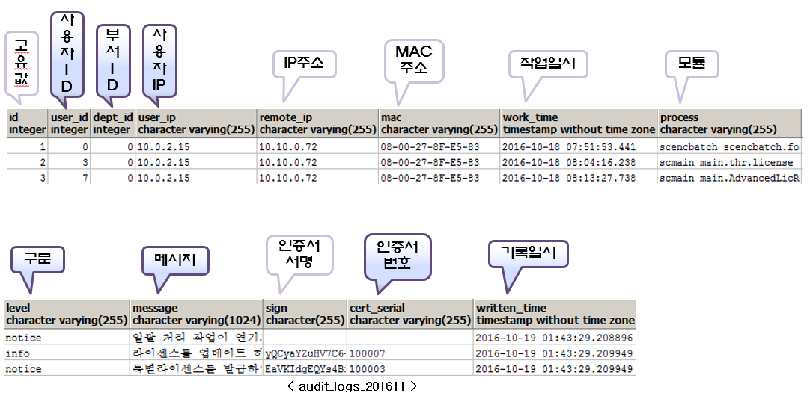

사용자 감사 (audit_logs_{yyyyMM})
-
사용자 감사 페이지는 사용자들이 어떤 작업을 했는지 등을 볼 수 있다.

※ 테이블 설명
-
사용자 감사 테이블은 월별로 생성된다. (audit_logs_{yyyyMM})

※ 컬럼 설명
-
user_ip: ShadowCube 클라이언트에서 조회된 IP 주소
-
remote_ip: 정책센터에서 ShadowCube 클라이언트를 바라본 IP 주소
-
process: scmain, scencbatch 등과 같은 작업한 프로세스명
-
sign: 로그 row 를 hash 한 값
이전